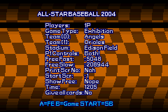
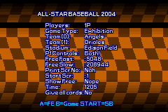

All-Star Baseball 2004 (USA) (Beta 1)
SRAM 256K Save Format Spec gbakit Built-In 📺 Joybus 💾 MultiBoot 🎮 4P Link
Cartridge Identity
- Game Code
ASNB(FamilyASN)- Header Title
ALLSTAR 2003- Maker / Revision
51/ rev0- ROM Size
- 8.0 MiB (8,388,608 B)
- Save Media
SRAM 256K- SHA-256
a4a8ab7e5d7f0bd9fe7a0fb41991facb6df3847b6af87d52ed005507f2184c01- Engine / SDK Group
comm-009(51 families)
Screenshots


Link Cable & Multiplayer Communications
This title contains detected communication capabilities: 📺 Joybus 💾 MultiBoot 🎮 4P Link.
Detailed protocol specifications, SIO registers, Joybus commands, and MultiBoot sequences are documented in the Link & Multiplayer Reference.
- Multi-Player SIO (4P)
- 16-bit ring network · SIOCNT (
0x04000128) literals:0x03ac64,0x03acb4,0x03ad44· SIODATA32/SIOMULTI0 (0x04000120) literals:0x03ae6c,0x03afc0,0x03c57c - GameCube Joybus
- Register literal
REG_JOYCNT(0x04000140) at offset0x043720 - GameCube Joybus
- Register literal
REG_JOYCNT(0x04000140) at offset0x0437a0 - GameCube Joybus
- Register literal
REG_JOY_RECV(0x04000150) at offset0x043724 - GameCube Joybus
- Register literal
REG_JOY_RECV(0x04000150) at offset0x043798 - GameCube Joybus
- Register literal
REG_JOY_TRANS(0x04000154) at offset0x04379c - GameCube Joybus
- Register literal
REG_JOY_TRANS(0x04000154) at offset0x043994 - GameCube Joybus
- Register literal
REG_JOYSTAT(0x04000158) at offset0x0436bc - GameCube Joybus
- Register literal
REG_JOYSTAT(0x04000158) at offset0x043790 - Single-Cart MultiBoot
- Single-Cartridge MultiBoot (Download Play) client/server handler · Thumb SWI 0x25 (
0xDF25):0x0a2e44,0x0bdfc8,0x0f9766,0x115796
Battery Save Format Specification
Open Full Save Format SpecDownload Sample .sav (32,768 B)Download save-format.json
- Specification Coverage
- 71 mapped fields · 11 verified checksum(s) · Confidence: MEDIUM
- gbakit Built-In Support
- Built-in (ASNB)
- Emulator Verification
- Checksum enforced: Yes · Repaired save accepted: Yes
gbakit save verify ASNB save.sav
gbakit save decode ASNB save.sav
gbakit save fix ASNB damaged.sav -o repaired.savObserved Battery Save Layout
- Fill Byte & Active Size
0x00fill · 5,201–5,201 / 32,768 B active (entropy 5.58 bits/B)- Active Offset Ranges
0x0–0x4,0x6,0x8,0x10–0x13,0x16,0x18–0x19,0x308C–0x308F,0x3092, +8 more (1393 total)- ASCII Magic / Headers
STAT,BATT,PITC,WBAT,WPIT,WSLU,Debug Message LOST,LINE- Observed Variable Regions
- 1 bytes across 1 spans:
0x7FFC - Candidate Checksum/Counter Spans
0x7FFC- Integrity Check
- Confirmed at
0x7FFC
Text, Fonts & Scene Data
- Primary Text Encoding
- Plain ASCII (uncompressed) (
158ASCII strings ·99Shift-JIS runs) - Font & VWF Indicators
- VWF Width Table 1bpp Font · BIOS SWIs: BitUnPack
0x10:12· LZ770x11/12:13· Huffman0x13:4· RLE0x14/15:6 - Scene & Packaging
9ROM pointer tables (≥32 entries,1≥200) ·26relativeu32TOCs ·150OAM metasprite hits
Hardware MMIO Subsystems
ppu_display0x800d698,0x8019034,0x801b348,0x801b54c,0x8039940,0x803a294,0x8042424,0x8042a40,0x8042e34
Regional Variants & Revisions (Family ASN)
- Samsara Naga 1x2 (Japan) (
ASNJ, 8 MiB) - Samsara Naga 1x2 (Japan) (Rev 1) (
ASNJ, 8 MiB) - Samsara Naga 1x2 (Japan) (Rev 2) (
ASNJ, 8 MiB)